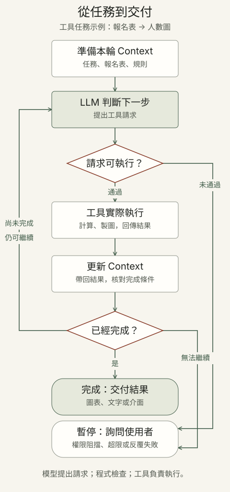

AI 助手如何把事情做完？
先看每個名詞的位置，再看它們如何一起工作。從一個問題開始，想深入時再展開。
點問題展開細節；點名詞，閱讀對應介紹。
的 AI 助手依任務組合這些能力
-
- 切分文字：Tokenizer／BPE
- 模型內部：Transformer、Attention、MoE
- 訓練與調整：預訓練、微調、LoRA
- 使用模型：推論、Temperature／Top-p
-
- 交代任務：System Prompt
- 容量限制：Context Window
- 挑選與更新資訊：Context Engineering
- 資訊太多時：Compaction、Progressive Disclosure
-
- 讓資料可查找：切片與索引、Embedding
- 查找相關內容：關鍵字／向量／混合檢索
- 保留下次要用的資訊：長期記憶
- 檢查來源：資料與依據
-
- 提出操作請求：Tool Calling
- 約定參數格式：Schema
- 連接工具與資料：MCP
- 操作電腦畫面：Computer Use
-
- 理解整個系統：Agent
- 安排執行與限制：Harness
- 重複使用工作方法：Skill
- 多個角色協作：Multi-agent／Handoff
- 跨時間執行：Background Agent
-
- 核對產物：完成條件
- 回頭找問題：Trace
- 需要人判斷時：Human-in-the-Loop
- 分清資料與指令：Prompt Injection
- 適時停下：步數、時間與費用限制
這是概念的分類，不是必備清單。AI 是更大的領域；這裡聚焦使用 LLM 的系統，有些任務一次問答就能完成。
例子：把報名表變成人數圖
任務是統計各場次的有效報名人數，再製圖。先說好完成條件：排除取消紀錄、總數一致、圖表標示清楚。
數位乩童｜Agent 架構總覽1:34 · 點開觀看
用一張符籙串起模型、提示詞、工具、人工確認與循環。

逐步閱讀：操作、相關名詞與原流程
LLM 判斷下一步
提出 Tool Calling 請求，例如統計人數。
程式先檢查請求
格式與 權限 都符合？需要時先請人確認。
工具 實際執行
計算、製圖，回傳結果或錯誤。
達標後交付結果
文字、Graphic 圖表，或可操作的介面。
工具結果會帶回 Context；未完成時，就回到「LLM 判斷下一步」，繼續這個 Agent Loop。
停下來，也是流程的一部分。遇到權限阻擋、反覆失敗或超出步數、時間與費用限制，就停止並詢問。看停止條件
再看每一步的細節與相關名詞
準備這一輪的資料
用 Prompt 說明任務，把報名表和規則放進 Context。
LLM 判斷下一步
例如：先請計算工具統計各場次人數。
透過 Tool Calling 提出請求，模型本身沒有執行這項操作。
程式先檢查請求
參數格式對嗎？有這項操作的 權限 嗎？
需要 人員確認 時，先停下來等候。
工具 實際執行操作
計算人數、製作圖表，再回傳結果或錯誤。
更新 Context，核對是否完成
把工具結果帶回這一輪資訊，依 完成條件 核對：總數一致嗎？每個場次都有列出嗎？
尚未達標，就依結果決定下一步。這條回圈就是 Agent Loop。
達標後交付結果
用文字、圖表 Graphic 或 互動介面 呈現，讓使用者能查看與核對。
這是簡化的工具循環示意，不會實際執行任務。不是每一輪都要用工具；系統也可以直接回答或先詢問。比較固定 Workflow 與 Agent
用原本的四步概覽再看一次
先看整體：一項工作如何完成？
例子：整理活動報名資料，核對人數，再製作圖表。
- 提出任務用 Prompt 說明目標
- 準備資訊整理 Context 與相關資料
- 處理與核對模型、Agent 或工具依需求協作
- 呈現結果文字、Graphic 或互動介面
這是一條示範路徑：Prompt 是上下文的一部分；並非每個任務都需要 RAG、Agent 或生成式介面。
先認識各個名詞 →